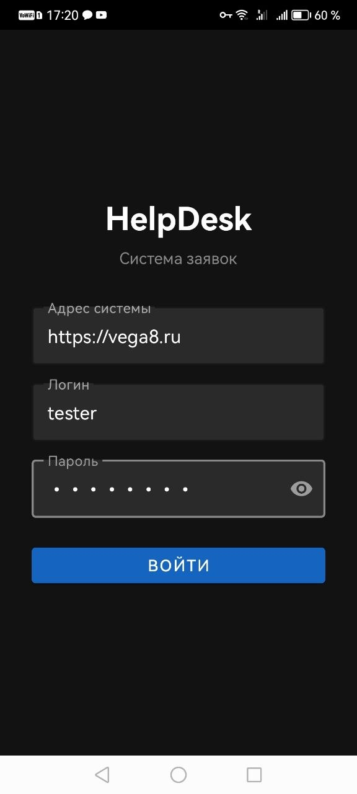
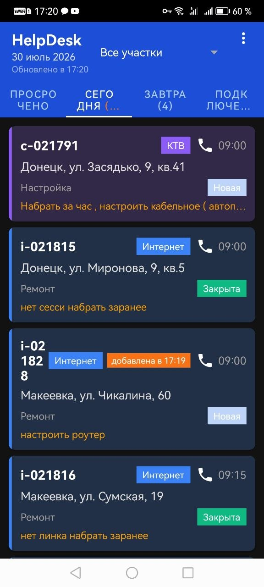
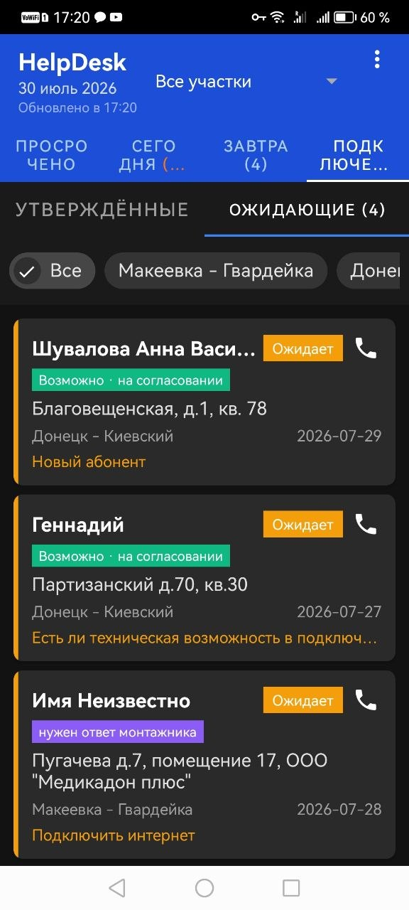
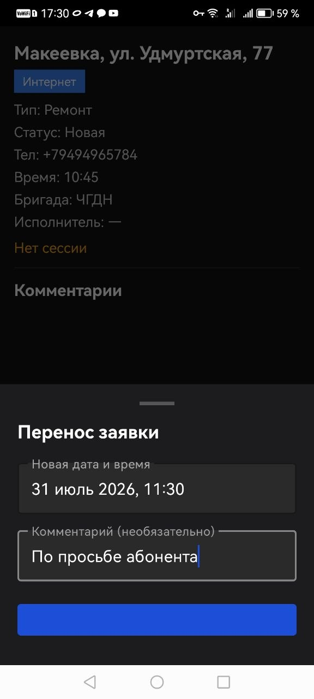
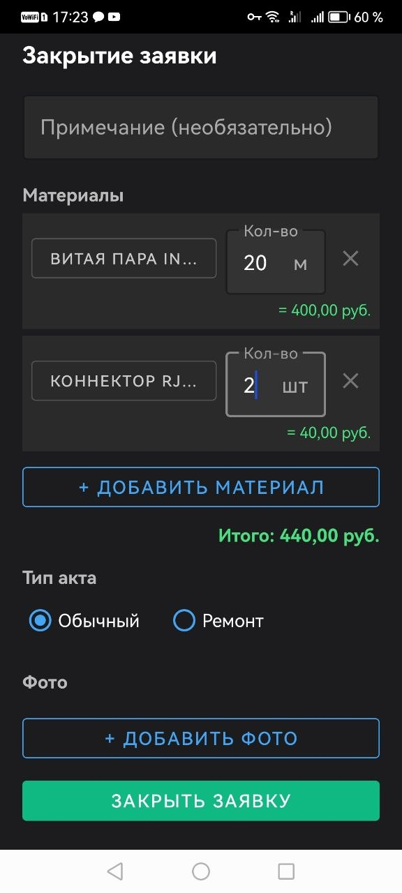
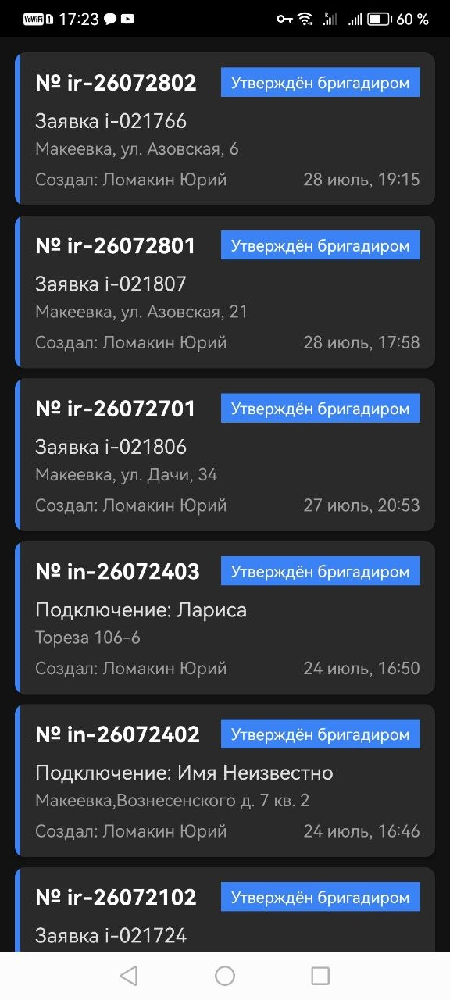
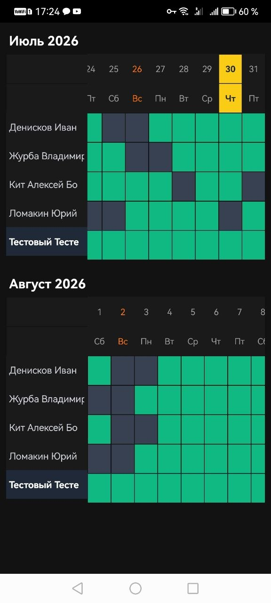

Логин и пароль — такие же, как в старом календаре.
Вход
При первом запуске введите адрес системы (уже заполнен), свой логин и пароль.

Главный экран
Заявки разложены по вкладкам:
- Просроченные — не выполнены в назначенный день. Требуют обязательной обработки: закрыть или перенести.
- Сегодня — план работ на сегодня.
- Завтра — обзор на ближайший день.

Подключения
Отдельная категория для потенциально новых адресов. Две вкладки:
- Ожидающие — заявки от операторов техподдержки, ждут вашего ответа: возможно подключение или нет. Если возможно — оператор перезвонит абоненту для согласования даты.
- Утверждённые — дата уже согласована с абонентом, это рабочие заявки на подключение.

Перенос заявки
Текущие заявки (не Подключения) можно перенести на другую дату прямо из карточки заявки.

Закрытие заявки и акт
Если использовались материалы — нажмите «Добавить материал», сформируйте таблицу и выберите тип акта:
- Обычный — абонент оплачивает.
- Ремонт / Восстановление — нулевой, например ремонт на узле или магистрали не по вине абонента.
Акт сформируется автоматически, номер присваивается сам — вводить вручную не нужно.

Список актов
Доступен в Меню → Акты — все акты, которые ещё не прошли полный цикл согласования.

Расписание выходов
В главном меню — расписание бригады на текущий и следующий месяц. Составляет бригадир на портале.

Если у вас не Android-телефон — приложение доступно как веб-версия:
app.vega8.ru
— полностью повторяет функционал.